A full loop of the three Baltic countries by road. From Riga west to Kemeri's bog and the waterfall town of Kuldīga, south to the dunes of the Curonian Spit, through Kaunas and Trakai's island castle to baroque Vilnius, then back north through Latgale's farmsteads, the Gauja valley, the Seto villages of south Estonia, university Tartu, Lahemaa National Park, Tallinn and the beach town of Pärnu. Most stops are one night, and Riga and Tallinn get less time than they deserve: we recommend adding a second night in Tallinn and a final night in Riga, making it 15 days.
See it for yourself
Photos from the journey
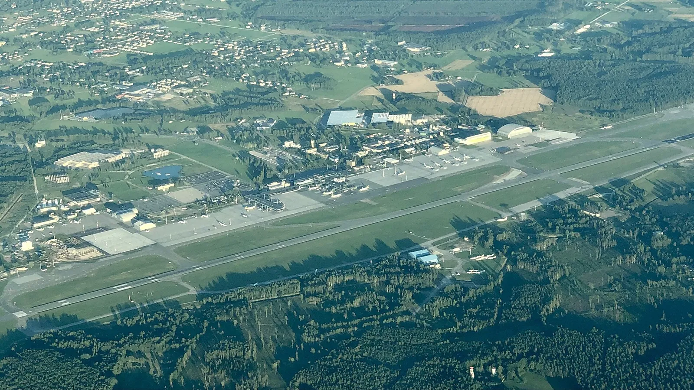
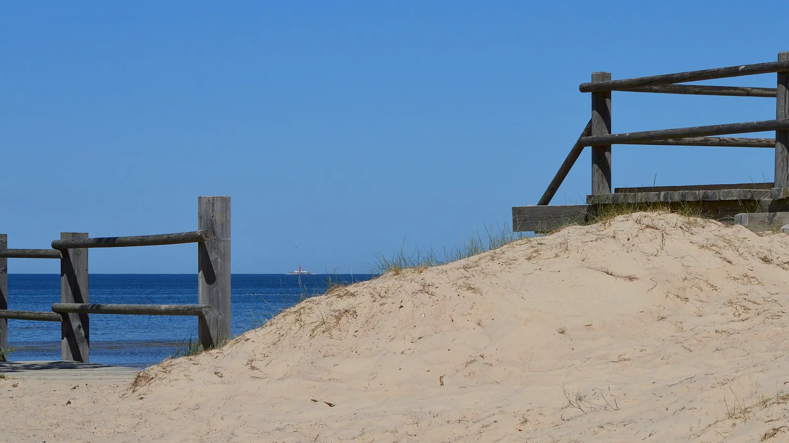
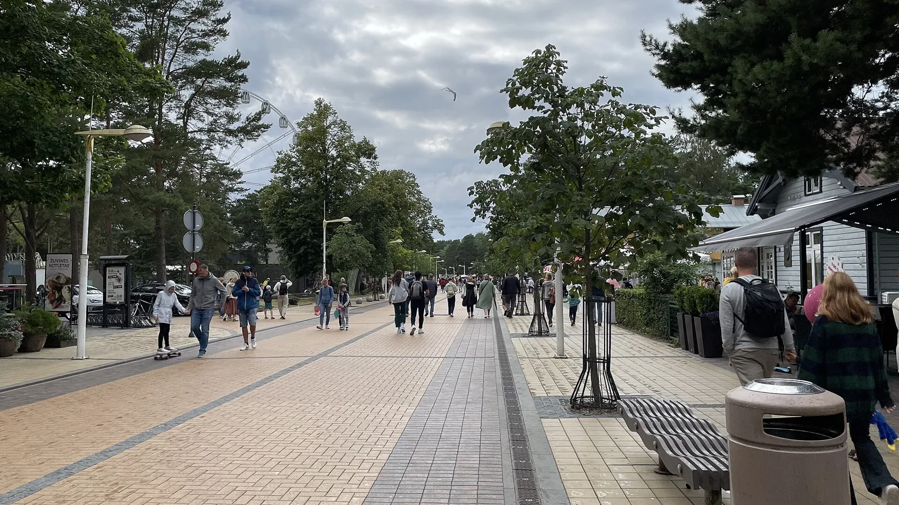
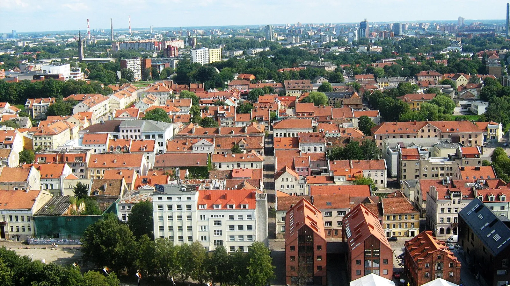
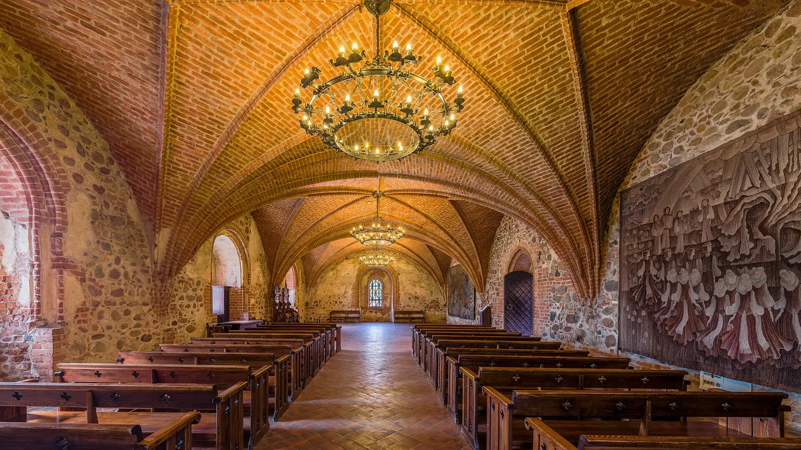
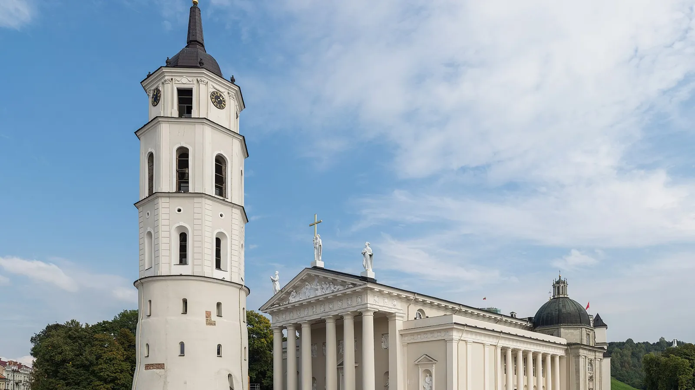
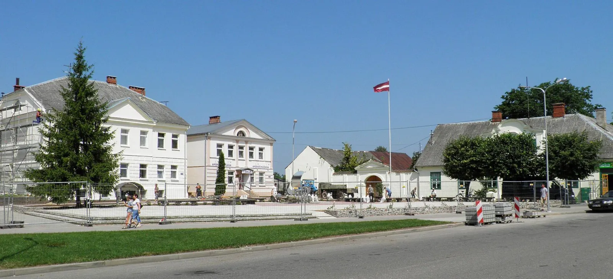
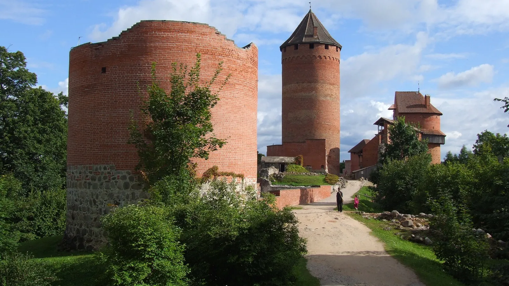
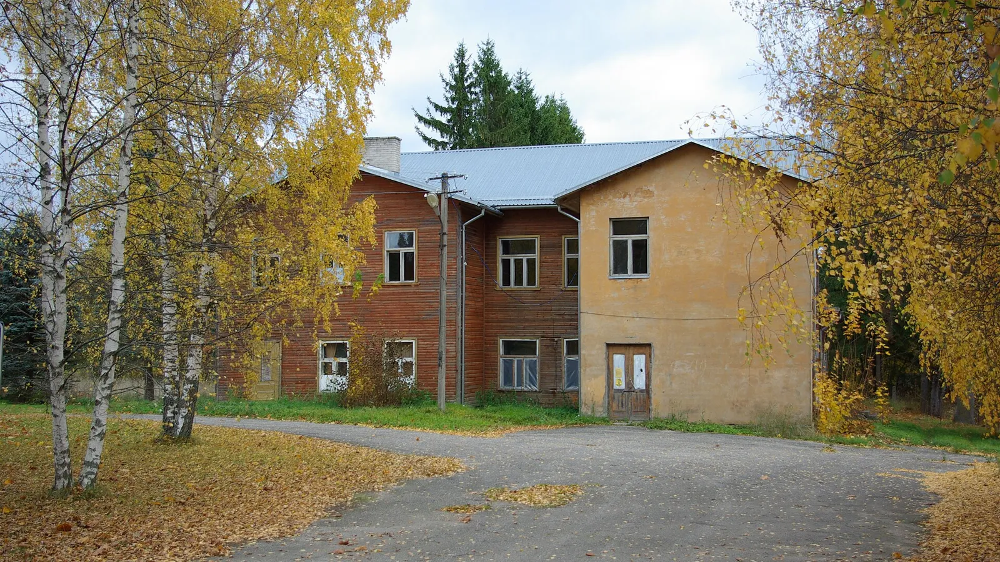
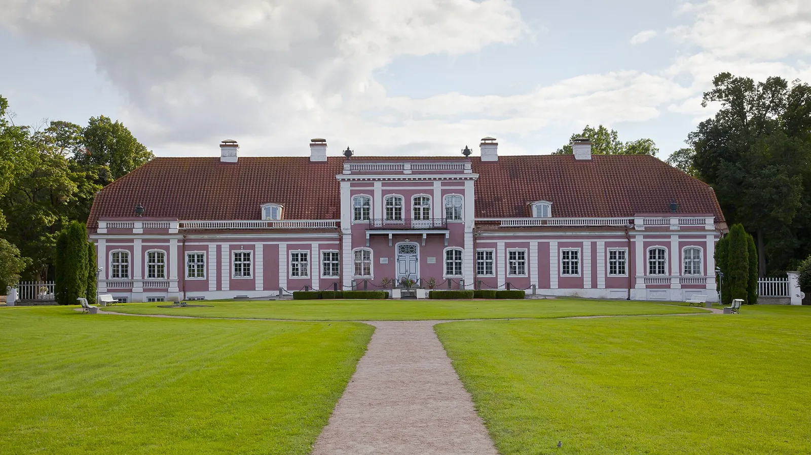
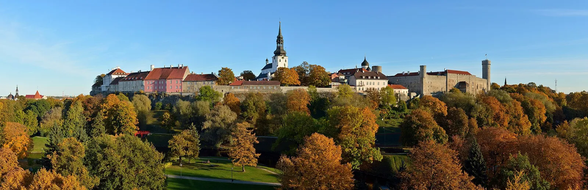
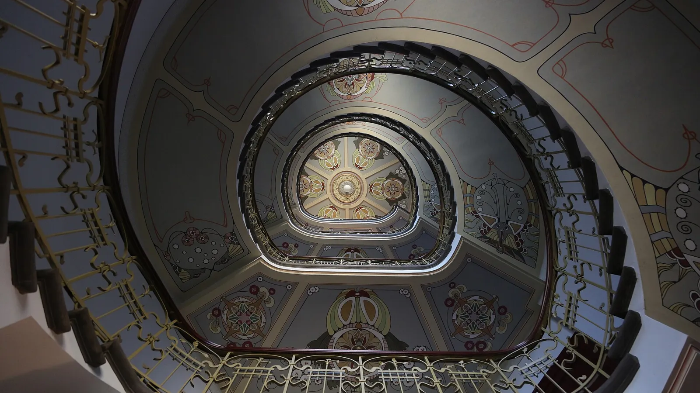
Where you go
The journey on one map
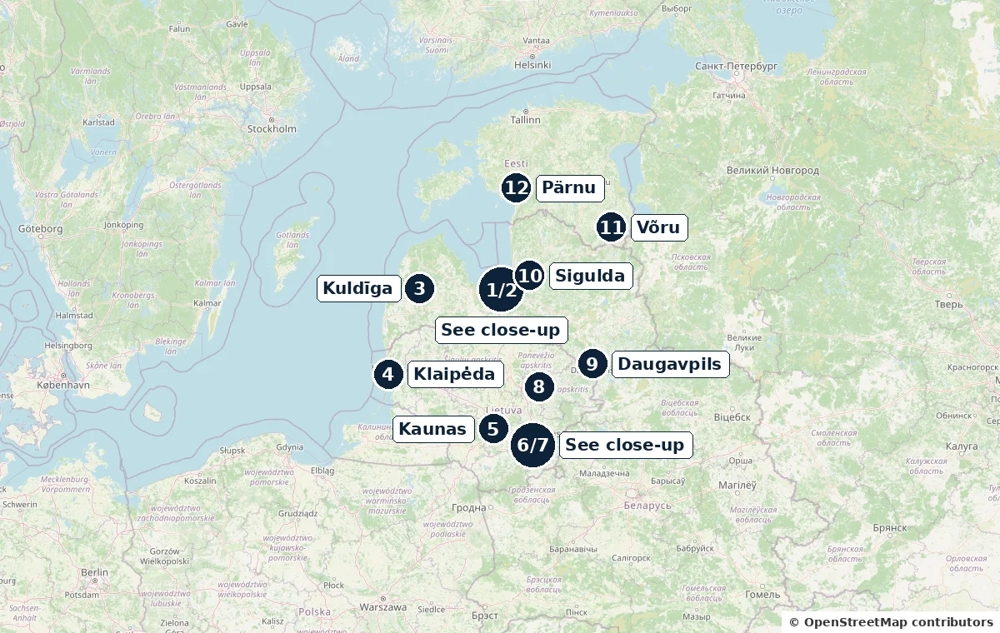
RigaĶemeri National ParkKuldīgaKlaipėdaNidaKaunasTrakaiVilniusAnykščiaiDaugavpilsSiguldaVõruTartuLahemaa National ParkTallinnPärnuRiga
Day by day, in short
Daily travel brief
Distances are by road for the whole day. The full plan with timings comes with your detailed itinerary.
-
1
-
2
Kemeri National Park to Kuldīga
- Great Kemeri Bog boardwalk: closed shoes; the boards are slippery after rain.
- Kuldīga is small and quiet in the evening.
-
3
The Curonian Spit and Nida
- Ferry to the Curonian Spit and Nida: a long day; ferries run about every 30 minutes and there is an entry fee for the national park.
- Stay on marked paths: the dunes are fragile and protected.
-
4
-
5
Trakai Island Castle to Vilnius
- Try kibinai pastries in Trakai; ask for the vegetable or cheese filling.
-
6
-
7
-
8
Latgale farmstead to Sigulda
- A long day of country roads; the driver stops every 1 hour 30 minutes.
-
9
Gauja National Park to Võru
Gutmanis Cave Sigulda Cable Car
- There is no border control between Latvia and Estonia; carry your passport anyway.
-
10
-
11
Lahemaa National Park to Tallinn
- Viru bog trail: insect repellent and closed shoes in summer.
- Tallinn deserves a second night; we recommend adding one.
-
12
Tallinn morning, then Pärnu
- The Baltic Sea is cool even in July: about 18 to 20°C.
-
13
Riga and departure
- Riga art nouveau district: leave enough time: the airport is 25 minutes from the centre and you should arrive 3 hours before an international flight.
- We recommend a final night in Riga so the art nouveau quarter and central market are not rushed.
Local know-how
Travel hacks from our desk
Hotel deposit
Use a credit card for the deposit or pre-authorisation at check-in, never a forex or debit card. Forex cards cannot hold funds, many hotels refuse them, and a credit-card hold is released faster.
Cards and cash
On card machines, always choose to pay in euros, never in INR. Cards work almost everywhere. Carry about EUR 50 in cash for small cafés, toilets and markets.
Pickpockets
Busy stations, trams and squares are pickpocket hotspots. Keep passports in the hotel safe, carry a copy, and wear your bag in front in crowds.
Plugs, water and meal times
Plugs are the two round-pin type C and F at 230 volts (Switzerland uses type J; a type C plug fits). Tap water is safe to drink. Lunch is about 12:00 to 14:00 and dinner from about 18:30.
When to go
Best time to visit for this journey
June to August for the long light days.
May to September, with white nights in June. Many rural sights close or shorten hours from October.
The package
What's included
Included
- 12 nights with breakfast
- Private car with driver (or self-drive rental)
- Curonian Spit ferry
- Trakai boat ride
- Seto dressing ceremony
- 24/7 support from Blue Diamond Voyage
Not included
- International flights
- Schengen visa
- Entry fees and national park fees
- Lunches and dinners
- Travel insurance
The detailed itinerary
Some journeys are planned. Ours are crafted.
The full 13-day plan is ready: hour-by-hour timings, drive times, temple dress codes, food for your diet and a route map for every day. Tell us your dates and your city, and we'll send it to you on WhatsApp, shaped around you.
- Hour-by-hour timings
- A route map for every day
- Hotel and room details
- Visa and entry steps
- Vegetarian and Jain dining
24/7 travel desk+91 97148 59797+91 98242 21400
Photo and map credits
- Riga International Airport: АнИгМа, CC BY-SA 4.0, via Wikimedia Commons
- Ķemeri National Park: Scotch Mist, CC BY-SA 4.0, via Wikimedia Commons
- Palanga: Terminator216, CC BY-SA 4.0, via Wikimedia Commons
- Klaipėda Old Town: <squareshadow>, Public domain, via Wikimedia Commons
- Trakai Island Castle: Diliff, CC BY-SA 3.0, via Wikimedia Commons
- Vilnius Cathedral: Diliff, CC BY-SA 3.0, via Wikimedia Commons
- Krāslava: bontrager, CC BY 3.0, via Wikimedia Commons
- Turaida Castle: Pudelek (Marcin Szala), CC BY-SA 3.0, via Wikimedia Commons
- Obinitsa: Rein Järvelill, CC BY-SA 3.0, via Wikimedia Commons
- Sagadi Manor: Diego Delso, CC BY-SA 3.0, via Wikimedia Commons
- Toompea: Ivar Leidus, CC BY-SA 3.0 ee, via Wikimedia Commons
- Alberta iela: Hans A. Rosbach, CC BY-SA 3.0, via Wikimedia Commons
- Maps: © OpenStreetMap contributors; road routes by OSRM.